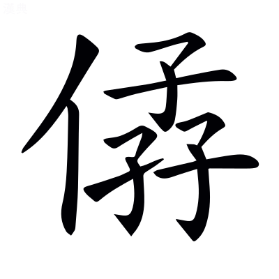
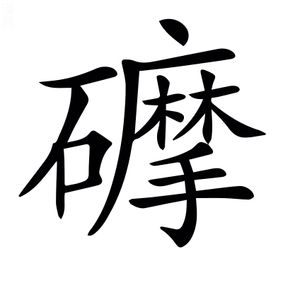
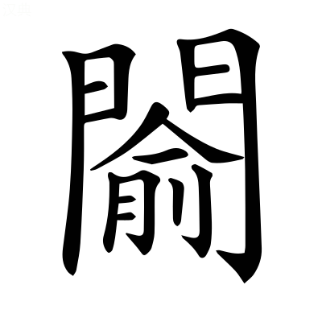
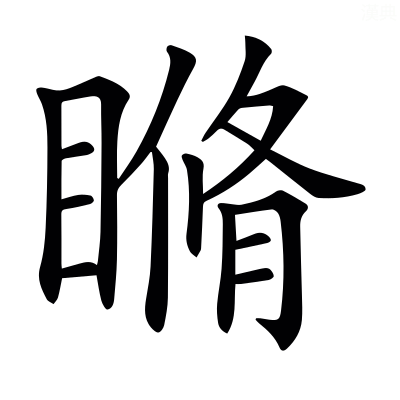
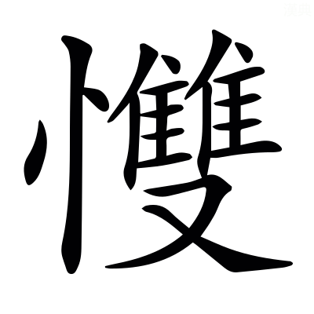

文選卷第六
梁昭明太子撰
文林郎守太子右內率府錄事參軍事崇賢館直學士臣李善注上
京都下
左太沖魏都賦一首
魏都賦一首
魏曹操都鄴，相州是也。太沖賦三都，以吳蜀遞相頓折，以魏都依制度。
左太沖 張載注
魏國先生有睟其容，乃盱衡而誥曰「异乎交益之士，孟子曰：君子所性，仁義禮智根於心，其生色睟然見於面，不言而喻。趙岐曰：睟，潤澤貌也。眉上曰衡。盱，舉眉大視也。异，異也。尙書·堯典：四岳曰「异哉」。〔善曰〕漢書曰：武帝置交州；又改梁曰益，有益州。又曰：公盱衡厲色，振揚武怒。音義曰：眉上曰衡，謂舉眉揚目也。字林曰：盱，張目也。爾雅曰：誥，告也。
蓋音有楚夏者，土風之乖也；〔善曰〕孫卿子曰：人居楚而楚，居夏而夏，非天性也，積靡使然也。史記曰：淮北沛陳汝南南郡，此西楚也。潁川南陽，夏人之居，故至今謂之夏人。
情有險易者，習俗之殊也。論語曰：性相近，習相遠也。〔善曰〕周易曰：辭有險易。春秋說題辭曰：中國之性，習俗常操。
雖則生常，固非自得之謂也。傳曰：習實生常。〔善曰〕孟子曰：使自得之。趙岐曰：使自得其本善性也。
昔市南宜僚弄丸，而兩家之難解。聊爲吾子復翫德音，以釋二客競于辯囿者也。莊子曰：市南宜僚弄丸，而兩家之難解。又曰：公孫龍，辯者之徒，飾人之心，易人之意，能勝人之口，不能服人之心，辯者之囿也。〔善曰〕毛詩曰：德音孔昭。
夫泰極剖判，造化權輿。〔善曰〕周易曰：易有太極，是生兩儀。史記曰：鄒衍稱引天地剖判以來。淮南子曰：大丈夫無爲，與造化逍遙。爾雅曰：權輿，始也。劇秦美新序曰：權輿天地未袪也。班固漢書述曰：彰其剖判。
體兼晝夜，理包清濁。〔善曰〕列子曰：昬明之分察，故一晝一夜。又曰：夫有形者生於無形，清輕者上爲天，濁重者下爲地。
流而爲江海，結而爲山嶽。〔善曰〕班固終南山賦曰：流澤遂而成水，停積結而爲山。
列宿分其野，荒裔帶其隅。巖岡潭淵，限蠻隔夷，峻危之竅也。潭，淵也。屈平卜居曰：橫江潭而漁。〔善曰〕漢書曰：秦地於天官東井輿鬼之分野。楊雄交州箴曰：交州荒裔，水與天際。方言曰：竅，空也。
蠻陬子侯夷落，譯導而通，鳥獸之氓也。陬落，蠻夷之居處名也。一名聚居爲陬。〔善曰〕廣雅曰：落，居也。杜篤通邊論曰：親錄譯導緩步四來。論衡曰：四夷入諸夏，因譯而通。說文曰：譯，傳四夷之語者。漢書：賈捐之上書曰「駱越之人，與禽獸無異」。毛萇詩傳曰：氓，民也。
正位居體者，以中夏爲喉，不以邊垂爲襟也。易曰：正位居體，美在其中，而暢於四支。〔善曰〕喉衿，以身及衣爲喻也。戰國策：頓子曰「韓，天下之喉咽也；魏，天下之胷腹也」。李尤函谷關銘曰：衿帶咽喉。聲類曰：衿，衣交領也。
長世字甿者，以道德爲藩，不以襲險爲屏也。〔善曰〕左氏傳：北宮文子曰「有其國家，令問長世」。周書：成王曰「朕不知字民之道，敬問伯父」。說文曰：甿，田民也。東方朔集曰：文帝以道德爲籬，以仁義爲藩。毛萇詩傳曰：藩，屏也。楊雄城門校尉箴曰：盤石唐芒，襲險重固。毛萇詩傳曰：屏，蔽也。
而子大夫之賢者，尚弗曾庶翼等威，附麗皇極。思稟正朔，樂率貢職。〔善曰〕言不曾與衆庶翼戴上者，等其威儀，而又不附著於大中之道也。國語：越王勾踐曰「苟聞子大夫之言」。賈逵曰：親而近之，故曰子大夫。尙書曰：庶明厲翼。孔安國曰：衆庶皆明其教，而自勉厲，翼戴上命。左氏傳曰：士會曰「貴有常尊，賤有等威」。莊子曰：附麗不以膠漆。王弼周易注曰：麗，著也。尙書曰：皇極，皇建其有極。孔安國曰：皇，大；極，中也。謂大中之道也。又曰：稟，受也。論語比考讖曰：正朔所加，莫不歸義。又撰考讖曰：穿胷儋耳，莫不貢職。漢書曰：單于非正朔所加。東觀漢記曰：百蠻貢職。
而徒務於詭隨匪民，宴安於絕域。榮其文身，驕其險棘。〔善曰〕詭隨匪人，言徒務於詭善隨惡，同於匪民，又自宴安於其絕域也。毛詩曰：無縱詭隨，以謹無良。毛萇曰：詭隨，詭人之善，隨民之惡者也。毛詩曰：獨爲匪民。左氏傳：管仲曰「宴安酖毒，不可懷也」。李陵書曰：出征絕域。漢書曰：少康之庶子，封於會稽，文身斷髮。蔡雍樊陵碑曰：進路孔夷，人情險棘。毛萇詩傳曰：棘，急也。
繆默語之常倫，牽膠言而踰侈。飾華離以矜然，假倔渠屈彊巨兩而攘臂。非醇粹之方壯，謀踳舛駮於王義。孰愈尋靡䓑於中逵，造沐猴於棘刺。李剋書曰：言語辯聦之說，而不度於義者，謂之膠言。周官曰：形方氏掌制邦國之地域，而正其封彊，無華離之地。班固云：不變曰醇，不雜曰粹。莊子曰：惠施多方，其書五車，其道踳駮。言惡也。楚辭天問曰：靡䓑九逵，枲華安居。韓子曰：燕王好微巧，衛人曰「臣能以棘刺之端爲母猴」。王悅之，養以五乘之奉。王曰「吾請觀客爲棘刺之母猴。衛人曰「臣爲棘刺之母猴也，人主欲觀之，必半歲不入宮，不飲酒食肉，雨霽日出視之，晏陰之閒，而棘刺之母猴乃可見」。燕王因養衛人，而不能觀母猴。鄭人有臺下之冶者，謂王曰「臣爲削者，諸微巧必以削削之，所削必大於削。今棘刺之端不容削，王試觀客之削，則能與不能可知也」。王曰「客爲棘刺之母猴，何以理之？曰「以削」。王曰「吾欲觀客之削也」。客曰「臣請取之」。因逃。冶人謂王曰「上之無度量，言談之士，多棘刺之說也」。〔善曰〕周易曰：君子或默或語。廣雅曰：膠，欺也。鄭玄禮記注曰：矜，謂自尊大也。毛萇詩傳曰：然，是也。漢書：伍被曰「倔彊江淮閒」。孟子曰「馮婦善搏虎，攘臂下車，衆皆悅之」。楚辭曰：王色頩以開顏，精純粹而始壯。華，口哇反。司馬彪莊子注曰：踳讀曰舛，舛，乖也。駮，色雜不同也。頩，普丁反。王逸楚辭注曰：寧有䓑草，蔓衍於九逵之道。靡，蔓也。
劍閣雖嶛，憑之者蹶，非所以深根固蔕也。〔善曰〕劍閣，蜀境也。酈元水經注曰：小劍戍去大劍，飛閣通衢，故謂之劍閣。廣雅曰：嶛𡻝，高也，力彫反。又曰：蹶，敗也。善曰：老子曰：有國之母，可以長久。是謂深根固蔕，長生久視之道。聲類曰：蔕，果鼻也。
洞庭雖濬，負之者北，非所以愛人治國也。〔善曰〕洞庭，吳境也。史記：吳起曰「三苗氏，左洞庭而右彭蠡，恃此險也，禹滅之」。毛萇詩傳曰：濬，深也。鄭玄周禮注曰：負，性恃也。漢書音義·服虔曰：師敗曰北，南北之北。老子曰：愛人治國，能無知乎。
彼桑榆之末光，踰長庚之初輝。〔善曰〕東觀漢記：光武曰「失之東隅，收之桑榆」。毛詩曰：東有啓明，西有長庚。
況河冀之爽塏苦改，與江介之湫子小湄。〔善曰〕左氏傳：齊景公欲更晏子之宅，曰「子之宅，湫隘囂塵，請更諸爽塏」。楚辭曰：長江介之遺風。薛君韓詩章句曰：介，界也。毛萇詩傳曰：水草交曰湄。
故將語子以神州之略，赤縣之畿。魏都之卓犖呂角，六合之樞機。鄒衍以爲儒者所謂中國者，於天下八十一分居一耳。中國名赤縣神州，赤縣神州內自有九州，禹之所敘九州也，是以不得爲州數。中國外若赤縣神州者九，所謂九州者也。范雎說秦王曰「魏韓，中國處而天下之樞也」。〔善曰〕河圖括地象曰：崑崙，謂東南地方五千里，名曰神州，帝王居之。小雅曰：略，界也。周禮曰：方千里曰王畿。西都賦曰：卓躒諸夏。卓犖與卓躒音義同。呂氏春秋曰：神通乎六合。
于時運距陽九，漢網絕維。姦回內贔備，兵纏紫微。翼翼京室，眈耽眈帝宇，巢焚原燎，變爲煨燼，故荊棘旅庭也。殷殷寰內，繩繩八區，鋒鏑縱橫，化爲戰場，故麋鹿寓城也。不飲酒而怒曰贔。詩曰：內贔于中國。漢室之亂，起於閹官，故曰內贔也。紫微宮在南城下，于時兵所圍繞也。光熹元年四月，靈帝崩。八月，大將軍何進入省見太后，黃門張讓郭進等斬進。進部曲將兵突入尙書閣，閣閉。虎賁中郎將袁術等攻閣。日暮，術等起火燒閣。初平元年十二月，董卓遷都長安，其夜燒洛陽南北宮。易曰：鳥焚其巢。尙書曰：若火之燎于原。春秋穀梁傳曰：寰內諸侯，非天子之命，不得出會。尹更始曰：天子以千里爲寰。伍被謂淮南王曰「昔伍子胥諫吳王，吳王不用，乃曰「『臣今見麋鹿遊姑蘇臺也。』臣今見宮中生荊棘露沾衣也」。〔善曰〕春秋保乾圖曰：五運七變，各以類驚。宋衷曰：五運，五行用事之運也。孔安國尙書傳曰：距，至也。漢書：陽九厄曰初入百六陽九。音義曰：易傳所謂陽九之厄。漢書曰：漢興，禁網踈闊。管子曰：國有四維，四維不張則滅。王逸楚辭注曰：維，紘也。尙書曰：崇信姦回。毛詩曰：商邑翼翼。漢書：客謂陳涉曰「夥，涉之爲王沈沈者」。應劭曰：沈沈，宮室深邃之貌。沈，長含切反，與眈音義同。謝承後漢書曰：陽球爲司隸校尉，虎視帝宇。廣雅曰：煨，燼也；烏瑰反。廣雅曰：煨，煙熅也。杜預左氏傳注曰：燼，火之餘木也；似進反。毛萇詩傳曰：殷，衆也。毛詩曰：子孫繩繩兮。長楊賦曰：洋溢八區。言廣大也。說文曰：鋒，兵端也。又曰：鏑，矢鋒也。戰國策曰：綴甲厲兵，效勝於戰場。
伊洛榛曠，崤函荒蕪。〔善曰〕服虔漢書注曰：榛，木叢生也。賈逵國語注曰：蕪，穢也。
臨菑牢落，鄢郢丘墟。〔善曰〕漢書：齊郡有臨菑縣。牢落猶遼落也。洞簫賦曰：翩連緜以牢落。東觀漢記曰：第五倫自度仕宦牢落。漢書：南郡有故鄢縣。呂氏春秋：燭過曰「子胥諫而不聽，故吳爲丘墟」。
而是有魏開國之日，締構之初。萬邑譬焉，亦獨猶犫昌由麋之與子都，培塿之與方壺也。〔善曰〕周易曰：開國承家。廣雅曰：締，結也。犫麋，古之醜人也。呂氏春秋曰：陳有惡人焉，曰敦洽犫麋，椎顙廣額，色如漆赭，陳侯悅之。毛詩曰：不見子都。子都，美丈夫也。左氏傳曰：太叔曰「培塿無松栢」。培，步苟反。塿，路苟反。方壺，二三山名，已見上文。
且魏地者，畢昴之所應，虞夏之餘人。先王之桑梓，列聖之遺塵。考之四隈，則八埏延之中；測之寒暑，則霜露所鈞。卜偃前識，而賞其隆，吳札聽歌，而美其風。雖則衰世，而盛德形於管絃；雖踰千祀，而懷舊蘊於遐年。詩譜云：魏地，畢昴之分野，虞舜及禹所都之地，在禹貢冀州，雷首之北，析城之西，周以封同姓。其後晉獻公滅魏，以封大夫畢萬。在晉之南河曲，故其詩云：彼汾一曲，寘之河之干。隈猶隅也。鄒衍曰：四隈不靜。司馬相如封禪文曰：下泝八埏。國語曰：卜偃云「魏，大名也，以是始賞，天啓之矣」。左傳曰：吳公子札來聘，使工爲之歌魏，曰「美哉，大而婉，儉而易行，以德輔此，則爲明主也」。〔善曰〕毛詩曰：惟桑與梓，必恭敬止。王逸楚辭注曰：考，校也。周禮曰：以土圭測日影，以求地中，日南多暑，日北多寒。禮記曰：日月所照，霜露所墜。左氏傳：史趙曰「盛德必百世祀」。吳越春秋：樂師曰「君王之德，可記之於管絃」。毛詩序曰：懷其舊俗。方言曰：蘊，積也。
爾其疆域，則旁極齊秦，結湊冀道。開胷殷衛，跨躡燕趙。山林幽岟烏朗切，川澤迴繚。恒碣碪 於青霄，河汾浩涆而皓溔。南瞻淇澳
於青霄，河汾浩涆而皓溔。南瞻淇澳於六，則綠竹純茂；北臨漳滏父，則冬夏異沼。神鉦迢遞於高巒，靈響時驚於四表。溫泉毖秘涌而自浪，華清蕩邪而難老。〔善曰〕史記當魏襄王時，蘇秦說魏襄王曰：南有鴻溝，東有淮潁，西有長城，北有河外。地理志曰：魏，觜觿參之分野也，自高陵以東，河東河內，南有陳留及汝南之邵陵隱強新汲西華長平，潁川之舞陽郾許鄢樊陵，河南之開封中牟陽武酸棗卷，皆魏分也。魏武皇帝初封魏公，南得河內魏郡，北得趙國中山常山鉅鹿安平甘陵，東得平原，西得東平，凡十郡，以此爲魏之本國，蓋冀州之地。恒山，北岳也。碣石，山名也。詩云：瞻彼淇澳，綠竹猗猗。漢書溝洫志曰：下淇園之竹。漳滏，二水名，經鄴西北。滏水熱，故曰滏口。水有寒有溫，故曰冬夏異沼也。冀州圖：鄴西北鼓山，山上有石鼓之形，俗言時自鳴。劉邵趙都賦曰：神鉦發聲。俗云：石鼓鳴則天下有兵革之事。詩云：毖彼泉水。溫水在廣平都郡易陽縣，俗以治疾洗百病。華清，井華水也。〔善曰〕王逸楚辭注曰：湊，聚也。冀道，亦二國名也。爾雅曰：兩河閒曰冀州。左氏傳曰：江黃道栢，方睦於齊。杜預曰：道國在汝南。胷猶前也。南都賦曰：涓淯水蕩其胷。漢書地理志曰：河內本殷舊都，周分爲鄁鄘衛。碪，高貌。碪，五感反。鄭玄周禮注曰：汾水出汾陽縣。浩，古老切。涆，古旦反。上林賦曰：澋溔潢漾。廣雅曰：浩溔，大也。皓，故老反。溔，餘眇反。山海經曰：少山，清漳水出焉。郭璞曰：至武安南入濁漳。山海經曰：神困山，滏水出焉。郭璞曰：經鄴西北入漳。說文曰：泌，水駃流也。泌與毖同；音秘。魚豢典略曰：浪井者，弗鑿而成。毛詩曰：永錫難老。
墨井鹽池，玄滋素液。厥田惟中，厥壤惟白。原隰畇畇，墳衍斥斥。或嵬力罪而複陸，或黋苦光朗而拓落。乾坤交泰而絪縕，嘉祥徽顯而豫作。是以兆朕振古，萌柢疇昔。藏氣讖緯，閟象竹帛。迥時世而淵默，應期運而光赫。暨聖武之龍飛，肇受命而光宅。鄴西高陵西伯陽城西有石墨井，井深八丈。河東猗氏南有鹽池，東西六十四里，南北七十里。尙書禹貢：冀州厥土惟白壤，厥田惟中中。閟，閉也。詩云：閟宮有洫侐。〔善曰〕周禮曰：辨其墳衍原隰之名。鄭玄曰：水厓曰墳，下平曰衍。毛詩曰：畇畇原隰；以純反。斥斥，廣大之貌也。蒼頡篇曰：斥，大也。㟴，不平之貌。㟴，烏罪切。黋朗，光明之貌。拓落，廣大之貌。周易曰：天地交泰。又曰：天地絪縕。西京賦曰：備致嘉祥。文帝答曹植詔曰：所獻詩二篇，徽顯成章。兆，猶機事之先見者也。淮南子曰：欲與物接而未成朕兆者也。許慎曰：朕，兆也；直軫反。毛詩曰：振古如茲。毛萇曰：振，自也。廣雅曰：萌，始也。爾雅曰：柢，本也；丁計反。禮記曰：余疇昔之夜夢。鄭玄曰：疇，發語聲也。說文曰：讖，驗也，河洛所出書曰讖。毛萇詩傳曰：閟，閉也。墨子曰：以其所書於竹帛，傳於後代子孫。春秋說題辭曰：尙書者，所以推期運、明命授之際。魏志曰：太祖武皇帝，姓曹諱操，爲丞相，封魏王。文帝受禪，追尊曰武皇帝。東京賦曰：世祖乃龍飛白水。毛詩序曰：文王受命作周也。鄭玄曰：受天命而王天下也。東京賦曰：漢初弗之宅。
爰初自臻，言占其良。謀龜謀筮，亦既允臧。修其郛郭，繕其城隍。經始之制，牢籠百王。畫雍豫之居，寫八都之宇。鑒茅茨於陶唐，察卑宮於夏禹。古公草創，而高門有閌苦浪；宣王中興，而築室百堵。兼聖哲之軌，并文質之狀。商豐約而折中，准當年而爲量。思重爻，摹大壯。覽荀卿，采蕭相。拱木於林衡，授全模於梓匠。謀龜謀筮謀及卜筮，猶周公之卜都洛邑也。毛詩云：爰契我龜，又曰：卜云其吉，終然允臧。重爻，易爻也。大壯，易卦名也。易曰：上古穴居而野處，後世聖人易之以宮室，上棟下宇，以禦風雨，盖取諸大壯，謂壯觀也。荀卿曰：宮室臺榭，以避燥濕溫涼。養德，別輕重也，非爲夸泰，將以明人之大通仁順也。春秋左傳曰：山林之木，衡鹿守之。治木器曰梓，尙書有梓材之篇也。〔善曰〕尙書曰：謀及卜筮。淮南子曰：太一者，牢籠天地。雍，西京也。豫，東京也。西京賦曰：取殊裁於八都。墨子曰：堯舜茅茨不翦。論語：子曰「禹卑宮室」。毛詩美古公亶父曰：高門有閌。又美宣王曰：築室百堵。說文曰：，具也；饌勉反。又曰：僝，取也；子軟切。孟子曰：梓匠輪輿，能與人規矩，不能使人巧。趙岐曰：梓匠，木工也。
遐邇悅豫而子來，工徒擬議而騁巧。闡鈎繩之筌緒，承二分之正要。揆日晷，考星耀。建社稷，作清廟。築曾宮以迴匝，比岡隒魚檢而無陂。造文昌之廣殿，極棟宇之弘規。若崇山崫起以崔嵬，髧徒感若玄雲舒蜺以高垂。二分，春秋之中者也。詩云：定之方中，作爲楚宮。揆之以日，作爲楚室。定，營室星，營室中可以興土功也。陂，傾也。易曰：無平不陂。文昌，正殿名也。蜺，龍形而五色。〔善曰〕難蜀父老曰：遐邇一躰。豫或爲務。西都賦序曰：衆庶悅豫。毛詩曰：庶人子來。周易曰：擬之而後言，議之而後動，擬議以成其變化。甘泉賦曰：王爾投其鈎繩。杜預左傳注：銓，次也；與筌同。周禮曰：匠人建國，晝參謀日中之景，夜考之極星，以正朝夕。鄭玄曰：極星，北辰也。周禮曰：左宗廟，右社稷。說文曰：隒，崖也。鄭玄禮記注曰：陂，傾也。周易曰：上棟下宇，以避風兩。，高貌也。景福殿賦曰：若仰崇山而戴垂雲。髧，垂貌也。淮南子曰：玄雲素朝。
瓌材巨世，
楚洽㙷除立參差。枌音汾橑音老複結，欒櫨疊施。丹梁虹申以並亘，朱桷森布而支離。綺井列䟽以懸蔕，華蓮重葩而倒披。齊龍首而涌霤，時梗概於滮被尤池。爾雅曰：桷謂之榱。〔善曰〕西都賦曰：因瓌材而究奇，抗應龍之虹梁。廣雅曰：曲枅謂之欒。說文曰：欂櫨，柱枅也。然欒櫨一也，有曲直之殊耳。西都賓曰：抗應龍之虹梁。西京賦，蔕倒茄於藻井，披紅葩之狎獵。又曰：䟽龍首以抗殿。齊龍首而涌霤，謂畫爲龍首於椽，承檐四隅，而以寫霤也。說文曰：霤，屋水流也。東京賦曰：其梗概如此。毛詩曰：滮池北流也。
旅楹閑列，暉鑒抰烏浪振。榱題黮，階抵坻鍔嶙峋。埤蒼曰：嶙峋，山崖之貌也。毛詩曰：風雨攸除。墨子曰：聖王作爲宮室，邊足以御風寒，上足以待露。
巖巖北闕，南端逌遵。竦峭雙碣，方駕比輪。西闢延秋，東啓長春。用覲羣后，觀享頤賓。文昌殿前值端門。端門之前，南當南止車門，又有東西止車門。端門之外，東有長春門，西有延秋門。文昌殿所以朝會賓客，享四方。〔善曰〕李尤德陽殿賦曰：朱闕巖巖。凡南方正門，皆謂之端。春秋說題辭曰：血書魯端門。西京賦曰：圓闕竦以造天，若雙闕之相望。毛萇詩傳曰：覲，見也。尙書曰：肆覲羣后。周易曰：觀頤，觀其所養也。頤養，亦享也，故曰觀享頤賓；許兩切。
左則中朝有赩，聽政作寢。匪樸匪斵，去泰去甚。木無彫鎪所留，土無綈題錦。玄化所甄，國風所禀。中朝，內朝也。漢氏，大司馬侍中散騎諸吏爲中朝，丞相六百石以下爲外朝也。文昌殿東有聽政殿，內朝所在存也。墨子曰：堯之爲君，采椽不斵。晏子春秋曰：明堂之制，下之濕潤不能及也，上之寒暑不能入也。土事不文，木事不鏤，示民知節也。老子曰：去甚去泰。爾雅曰：鏤，鎪也。〔善曰〕毛萇詩傳曰：赩，赤貌也。尙書曰：既勤樸斵。孔安國曰：樸，治；斵，削也。西京賦曰：木衣綈錦。說文曰：綈，厚繒也。玄化自此陶甄而成。國風於是有稟承也。蔡雍陳留太守頌曰：玄化洽矣，黔首用寧。漢書音義·如淳曰：陶人作瓦器，謂之甄；吉然反。毛詩序曰：一國之事，繫一人之本，謂之風。
於前則宣明顯陽，順德崇禮。重闈洞出，鏘鏘濟濟。珍樹猗猗，奇卉萋萋。蕙惠風如薰，甘露如醴。聽政殿聽政殿門前聽政闥，聽政門闥前升賢門，升賢門左崇禮門，崇禮門右順德門，三門並南向。升賢門前宣明門，宣明門前顯陽門，顯陽門前有司馬門。閽，守門也。周官：閽人守王門。爾雅曰：宮中之門謂之闈。洞，達也。南北外內、東西左右掖門，皆洞達相通。〔善曰〕禮記曰：大夫濟濟，庶士鏘鏘。毛萇詩傳曰：猗猗萋萋，茂盛貌也；音此禮切，叶韻。東京賦曰：惠風橫被。邊讓帝章華臺賦曰：惠風如春施。家語：舜曰「南風之薰兮」。王肅曰：薰，風至之貌也。論衡曰：甘露味如飴蜜，王者太平則降。鄭玄周禮注曰：醴，今甜酒。
禁臺省中，連闥對廊。直事所繇，典刑所藏。藹藹列侍，金蜩齊光。詰朝陪幄，納言有章。亞以柱後，執法內侍。符節謁者，典璽儲吏。膳夫有官，藥劑有司。肴醳亦順時，腠理則治。升賢門內聽政闥，向外，東入有納言闥、尙書臺。宣明門內升賢門，升賢門外，東入有內醫署。顯陽門內宣明門外，東入最南有謁者臺閤，次中央符節臺閤，最北御史臺閤，三臺並別西向。符節臺東有丞相諸曹。〔善曰〕魏武集：荀欣等曰「漢制，王所居曰禁中，諸公所居曰省中」。淮南子曰：連闥通房，人所安也。直事，若今之當直也。蔡邕獨斷曰：直事尙書一人，典刑，周禮六典八刑也。建安十八年，始置侍中中尙書御史符節謁者。金蜩，金蟬。蔡邕獨斷曰：侍中常侍皆冠惠文，加貂附蟬。左氏傳曰：詰朝將見。杜預曰：詰朝，平旦也。周禮曰：幕冪人掌幄帟。鄭玄曰：王所居之帳也。尙書·舜典曰：龍，命汝作納言。應劭漢書注曰：納言，如今尙書官，王之喉舌也。毛詩曰：出言有章。漢書音義曰：柱後，以鐵爲柱，今法冠是。如淳曰：御史冠也。符節掌璽，故云典璽。漢有尚符璽。謁者受事，故曰儲吏。漢書：謁者掌讚受事。周禮：膳夫，上士。又曰：醫師掌毒藥，共醫事。鄭玄周禮注曰：劑，和也。又禮記注曰：舊醳之酒，謂昔酒也。呂氏春秋：伊尹曰「用新去陳，腠理遂通。」高誘曰：腠理，肌脉也。
於後則椒鶴文石，永巷壼術。楸梓木蘭，次舍甲乙。西南其戶，成之匪日。丹青炳煥，特有温室。儀形宇宙，歷像賢聖。圖以百瑞，綷以藻詠。芒芒終古，此焉則鏡。有虞作繪，茲亦等競。近世王者後宮，以椒房爲通稱。聽政殿後有鳴鶴堂楸梓坊木蘭坊文石室，後宮所止也。壼，宮中巷也。術，道也。鳴鶴堂之前，次聽政殿之後，東西二坊之中央有温室，中有畫像讚。尙書·咎繇謩：舜曰「予欲觀古人之象，日月星辰，山龍華蟲，作繪粉米」。永巷，掖庭之別名。〔善曰〕列女傳曰：姜后待罪永巷。周禮曰：正宮掌宮中次舍。甲乙謂次舍之名以甲乙紀之也。毛詩曰：築室百堵，西南其戶。又曰：不日成之。藻詠，文藻而頌詠也。綷，子對切。芒芒，遠貌也。楚辭曰：長無絕兮終古。廣雅曰：鑒謂之鏡，照也。鄭玄論語注曰：繪，畫也。
右則踈圃曲池，下畹高堂。蘭渚莓莓，石瀨湯湯。弱葼係實，輕葉振芳。奔龜躍魚，有 呂梁。馳道周屈於果下，延閣胤宇以經營。飛陛方輦而徑西，三臺列峙以崢嶸。亢陽
呂梁。馳道周屈於果下，延閣胤宇以經營。飛陛方輦而徑西，三臺列峙以崢嶸。亢陽臺高於陰基，擬華山之削成。上累棟而重霤，下冰室而沍冥。文昌殿西有銅爵園園中有魚池堂皇。班固曰：畹，三十畝也。離騷曰：既滋蘭之九畹。石瀨，湍也。水激石間，則怒成湍。葼，木之細枝者也。楊雄方言曰：青齊兗豫之間謂之葼，故傳曰：慈母怒子，折葼而笞之，其惠存焉；子紅切。係，古計切。莊子周曰：呂梁懸水三十仞，流沫三十里，黿鼉魚鼈之所不能遊也。漢廄舊有樂浪所獻果下馬，高三尺，以駕輦車。銅爵園西有三臺，中央有銅爵臺，南則金虎臺，北則冰井臺，銅雀臺有屋一百一間。金虎臺有屋一百九間。冰井臺有屋百四十五間，上有冰室。三臺與法殿皆閣道相通，直行爲徑，周行爲營。建安十五年作銅雀臺。山海經曰：太華之山，削成四方。沍，堅也。春秋左氏傳曰：固陰沍寒。〔善曰〕楚辭曰：坐堂伏檻臨曲池。曹植責躬詩曰：夕宿蘭渚。左氏傳曰：原田莓莓。杜預曰：若原田之草莓莓然。莓，莫來反。楚辭曰：石瀨兮戔戔。說文曰：，察也，千例反。漢書曰：太子不敢絕馳道。應劭曰：天子道也，若今之中道。延，相連延也。淮南子曰：延樓棧道。魯靈光殿賦注：飛陛，揭孽；方輦，言廣也。甘泉賦曰：似紫宮之崢嶸。魯靈光殿賦注曰：榭而高大謂之陽，基在小故曰陰基。
周軒中天，丹墀臨猋。增搆峩峩，清塵彯彯。雲雀踶甍而矯首，壯翼摛鏤於青霄。雷雨窈冥而未半，皦日籠光於綺寮。習步頓以升降，御春服而逍遙。八極可圍於寸眸，萬物可齊於一朝。丹墀，以丹與蔣離合用塗地也。爾雅曰：扶搖謂之猋，猋，上也，風從下升也。班固西都賦說鳳闕曰：上觚稜而栖金雀。凡鳥之栖也，羽翼戢弭，以今揆古，言栖，非所覩之形也。張衡西京賦曰：鳳翥騫於甍標，感愬風而欲翔。此鳳之有定有住，尚向風而無一方此鳳之住有定向，而風無一方，則不宜言愬風也。但鳥跱則形定翼住，飛則歛足絕據，踶則舉羽翮用勢，若將飛而尚住，故言雲雀踶甍而矯首也。踶音提。王吉傳曰：進退步趨以實下。言人不行則膝脛以下虛弱不實也。眸，眸子也。王襃甘泉賦曰：十分未升其一，增惶懼而目眩；若播岸而臨坑，登木末以闚泉。楊雄甘泉賦說臺曰：鬼魅不能自逮，半長途而下顛。班固西都賦說臺曰：攀井幹而未半，目眩轉而意迷；舍靈檻而却倚，若顛墮而復稽。張衡西京賦說臺曰：將乍往而未半，怵悼慄而竦矜，非都盧之輕蹻，孰能超而究升？此四賢所以說臺榭之體，皆危 悚懼，雖輕捷與鬼神，由莫得而自逮也。非夫王公大人，聊以雍容升高，彌望得意之謂也。異乎老子曰若春升臺之爲樂焉，故引習步頓以實下，稱八方之究遠，適可以圍於徑寸之眸子，言其理曠而當情也。莊子有齊物之論。〔善曰〕軒，長廊之有牕也。列子曰：周穆王築臺，號中天臺。漢典職儀曰：以丹漆地，故稱丹墀。西都賦曰：正殿崔嵬曾構。七發曰：蒙清塵。毛萇詩傳曰：壯，健也。摛鏤，摛布其彫鏤也。說文曰：窈窕，深遠也。冥，幽昧也。毛詩曰：有如皦日。西京賦曰：交綺豁以䟽寮。論語：曾點曰「春服既成」。毛詩曰：於焉逍遙。淮南子曰：八紘之外，乃有八極。趙岐孟子章句曰：眸，目童子也。
悚懼，雖輕捷與鬼神，由莫得而自逮也。非夫王公大人，聊以雍容升高，彌望得意之謂也。異乎老子曰若春升臺之爲樂焉，故引習步頓以實下，稱八方之究遠，適可以圍於徑寸之眸子，言其理曠而當情也。莊子有齊物之論。〔善曰〕軒，長廊之有牕也。列子曰：周穆王築臺，號中天臺。漢典職儀曰：以丹漆地，故稱丹墀。西都賦曰：正殿崔嵬曾構。七發曰：蒙清塵。毛萇詩傳曰：壯，健也。摛鏤，摛布其彫鏤也。說文曰：窈窕，深遠也。冥，幽昧也。毛詩曰：有如皦日。西京賦曰：交綺豁以䟽寮。論語：曾點曰「春服既成」。毛詩曰：於焉逍遙。淮南子曰：八紘之外，乃有八極。趙岐孟子章句曰：眸，目童子也。
長塗牟首，豪徼古弔互經。晷漏肅唱，明宵有程。附以蘭錡魚九，宿以禁兵。司衛閑邪，鉤陳罔驚。牟者，閣道有說者也。霍光傳說昌邑王輦道牟首，鼓吹歌舞。豪，徼道也。晷，漏之刻也，西上東止車門北漏有刻屋室也。〔善曰〕說文曰：晷，景也，故曰晷漏。漢書：房中歌曰「肅倡和聲」。字書：倡亦唱字也；充向反。程猶限也；程與呈通。西京賦曰：武庫禁兵，設在蘭錡。建安二十二年初置衛尉。漢書曰：衛尉掌宮門衛屯兵。周易曰：閑邪存其誠。樂汁圖徵曰：鉤陳，後宮也。服虔甘泉賦注曰：紫宮外營鉤陳星。
於是崇墉濬洫，嬰堞帶涘。四門䡾䡾魚竭，隆厦夏重起。憑太清以混成，越埃壒烏害而資始。藐藐標危，亭亭峻趾。臨焦原而不怳，誰勁捷而无 ？與岡岑而永固，非有期乎世祀。陽靈停曜於其表，陰祇濛霧於其裏。墉，城也。濬，深也。洫，城溝也。張衡西京賦曰：經城洫。堞，城上女牆也。賈誼曰：翟伐衛，寇俠城堞。涘，厓也。
？與岡岑而永固，非有期乎世祀。陽靈停曜於其表，陰祇濛霧於其裏。墉，城也。濬，深也。洫，城溝也。張衡西京賦曰：經城洫。堞，城上女牆也。賈誼曰：翟伐衛，寇俠城堞。涘，厓也。毛詩云：夏屋渠渠。又曰：既成藐藐。尸子曰：莒國有石焦原者，廣尋長五十步，臨百仞之谿，莒國莫敢近也。有勇以見莒子者，獨却行齊踵焉，所以服莒國也。〔善曰〕薛綜西京賦注曰：䡾䡾，高貌也。鶡冠子曰：上及太清，下及太寧。老子曰：有物混成，先天地生。西都賦曰：軼埃壒之混濁。周易曰：萬物資始。王逸楚辭注曰：藐藐，遠也。說文曰：標，末也。鄭玄禮記注曰：危，棟上也。西京賦曰：狀亭亭以苕苕。說文曰：阯，基也。論語曰：慎而无禮則葸；與葸同；思子反。陽靈，天神也。甘泉賦曰：齊乎陽靈之宮。周禮曰：掌地祇之禮也。
菀以玄武，陪以幽林。繚了垣開囿，觀宇相臨。碩果灌叢，圍木竦尋。篁篠懷風，蒲蒱陶結陰。回淵漼，積水深。蒹葭 ，雚
，雚胡官蒻弱森。丹藕凌波而的皪，綠芰泛濤而浸七心潭以心。羽翮頡頏，鱗介浮沈。栖者擇木，雊者擇音。若咆步交渤勃澥與姑餘，常鳴鶴而在陰。表清籞，勒虞箴。思國卹，忘從禽。樵蘇往而無忌，即鹿縱而匪禁。玄武菀在鄴城西，菀中有魚梁釣臺竹園蒲陶諸果。詩曰：集于灌木。春秋左氏傳曰：鳥則擇木；又曰：鹿死不擇音；皆自得之謂也。雊者，舉雉兔之類，不傷其時，況其巨者乎。楊雄曰：勃澥之鳥。淮南子曰：軼鵾雞於姑餘。易曰：鳴鶴在陰，其子和之。張衡東京賦曰：江淵池清籞。虞箴，虞人之箴也，事見春秋，其辭曰「芒芒禹跡，畫爲九州，經啓九道。人有寢廟，獸有茂草，各有攸處，德用不擾。在帝夷羿，冒于原獸，忘其國恤，思其麀牡。武不可重，是用不恢于夏家。獸臣司原，敢告僕夫」。周易曰：即鹿無虞，往從禽也。孟子：齊宣王問曰「文王之囿方七十里，有諸？」孟子對曰「於傳有之」，曰「若是其大乎？」答曰「民猶以爲小也」。曰「寡人之囿方四十里，民猶以爲大，何也？」答曰「文王之囿方七十里，蒭蕘者往焉，雉兔者往焉，與民同之。民以爲小，不亦宜乎？臣始至於境，問國之大禁，然後敢入。臣聞郊關之內有囿方四十里，殺其麋鹿者如殺人之罪。則是四十里爲阱於國中。民以爲大，不亦宜乎？」言樵蘇往而無忌，即鹿縱而匪禁者，蓋同乎周文之德，異乎齊宣之意。〔善曰〕西都賦曰：幽林穹谷。西京賦曰：繚垣緜連。周易曰：碩果不食。莊子曰：見巨木，其絜百圍。孫子曰：水深則回。說文曰：淵，回水也。毛詩曰：有漼者泉。文子曰：積水成海。說文曰：，分別也，胡犬反。本草曰：藕，一名水芝。爾雅曰：荷，芙蕖，其根藕。此文云凌波而的皪，即藕爲徧名，非唯根矣。的皪，光明也；上林賦曰：的皪江靡。鄭玄周禮注曰：陵，芰也。說文曰：白濤，大波也。浸潭，漸漬也，隨波之貌。洞簫賦曰：玉液浸潭而承其根。毛萇詩傳曰：飛而上曰頡，飛而下曰頏。周禮曰：川澤宜鱗物，墳衍宜介物。鄭玄曰：鱗，魚龍之屬。介，龜鼈之屬，水居陸生者也。漢書音義·晉灼曰：樵，取薪也；蘇，取草也。
腜腜坰野，奕奕菑畝。甘荼伊蠢，芒種斯阜。西門溉其前，史起灌其後。墱流十二，同源異口。畜爲屯雲，泄爲行雨。水澍稉古衡稌徒五，陸蒔稷黍。黝黝桑柘，油油麻紵。均田畫疇，蕃廬錯列。薑芋充茂，桃李蔭翳音咽叶韻，家安其所，而服美自悅。邑屋相望武方，而隔踰奕世。腜腜，美也；詩云：周原腜腜，堇荼如飴。爾雅曰：田一歲曰菑。詩云：薄言采芑，于此菑畝。周官曰：澤草所生，種之芒種。鄭司農曰：芒種，稻麥也。今鄴下有十二墱天井優堰，在城西南，分爲十二墱者也；丁鄧切。微子麥秀之歌曰：黍苗油油。漢制，列侯公主田無過三十頃者，其餘各以官次。哀帝時，董賢賜田猥多，王嘉上䟽「均田之制，從此隳壞」。疇者，界也埒畔際也。詩云：中田有廬。孟子曰：五畆之宅，樹之以桑。故曰蕃廬錯列。老子曰：甘其食，美其服，樂其俗，安其居，鄰里相望，雞犬之聲相聞，人至老死不相與往來。〔善曰〕韓詩曰：周原腜腜；莫來反。毛詩曰：奕奕梁山，維禹甸之。賈逵國語注曰：阜，長也。河渠書史記曰：西門豹引漳水溉鄴，以富魏之河內。漢書又曰：史起爲鄴令，遂引漳水溉鄴，人歌之曰「鄴有賢令兮爲史公，決漳水兮灌鄴旁。終古潟寫鹵兮生稻粱」。水陸，謂高下之田也。二渠之利，下則澍生稉稌，高則植立稷黍也。說文曰：澍，時雨，所以澍生萬物者也；之樹反。方言曰：蒔，更植立也；郭璞曰：謂更種也。時吏切。爾雅曰：黑謂之黝。郭璞曰：黝，黑貌也。聲類曰：油油，麻肥也。莊子曰：治邑屋，曷嘗不法聖人哉。謝承後漢書曰：王翁位二千石，奕世相襲。
內則街衝輻輳，朱闕結隅。石杠飛梁，出控漳渠。䟽通溝以濱路，羅青槐以蔭塗。比滄浪平而可濯，方步櫩以占而有踰。習習冠蓋，莘莘所巾蒸徒。斑白不提，行旅讓衢。設官分職，營處署居。夾之以府寺，班之以里閭。言鄴城內諸街，有赤闕黑里，闕正當東西南北城門，最是其通街也。石竇橋在宮東，其水流入南北里。爾雅曰：石杠謂之倚。郭璞曰：石橋，音江謂石橋也。䟽，通也。魏武帝時堰漳水，在鄴西十里，名曰漳渠堰。東入鄴城，經宮中東出，南北二溝夾道，東行出城，所經石竇者也。楚辭曰：滄浪之水清，可以濯吾纓。〔善曰〕杜預左氏傳注曰：衝，交道也；齒容反。文子曰：群臣輻湊。李尤德陽殿賦曰：朱闕巖巖。晉灼漢書注曰：飛梁，浮道之橋。小雅曰：控，引也。步櫩，長廊也。楚辭曰：曲屋步櫩宜擾畜。上林賦曰：步櫩周流，長途中宿。蔡雍胡憶碑曰：祁祁我君，習習冠蓋。毛萇詩傳曰：莘莘，衆多也。禮記曰：斑白者不提挈。鄭玄曰：雜色曰斑。家語曰：虞芮二國爭田，入文王境，行者讓路。周禮曰：設官分職，以爲民極。小雅曰：班，次也。
其府寺則位副三事，官踰六卿。奉常之號，大理之名。厦夏屋一揆，華屏齊榮。肅肅階䦳，重門再扃。師尹爰止，毗代作楨。當司馬門南出，道西最北東向相國府，第二南行御史大夫府，第三少府卿寺。道東最北奉常寺，次南大農寺。出東掖門正東，道南西頭太僕卿寺，次中尉寺。出東掖門，宮東北行北城下，東入大理寺。宮內大社西郎中令府。城南有五營。魏武帝爲魏王時，太常號奉常，廷尉號大理。建安十八年，始置侍中、尙書、御史、符節、謁者、郎中令、太僕、大理大農少府中尉。二十一年，大理鍾繇爲相國，始置太常宗正。二十二年，以軍師華歆爲御史大夫，初置衛尉。時武帝爲魏王，置相國御史大夫，故云位副三事。置卿近九，故曰官踰六卿。〔善曰〕毛詩曰：三事大夫，莫肯夙夜。夏屋，已見上注。鄭玄禮記注曰：畫，華也。爾雅曰：屏謂之樹。鄭玄禮記注曰：榮，屋翼也。爾雅曰：兩階閒曰䦳；許亮反。周易曰：重門擊柝。說文曰：扃，門之關也。毛詩曰：赫赫師尹。毛萇曰：太師，周之三公也。尹氏爲太師。毛詩曰：天子是毗。又曰：王國克生，維周之楨。毛萇曰：楨，幹也。
其閭閻則長壽吉陽，永平思忠。亦有戚里，寘宮之東。閈出長者，巷苞諸公。都護之堂，殿居綺牎。輿騎朝猥，蹀 其中。長壽吉陽永平思忠，四里名也。長壽吉陽二里在宮東，中當石竇。吉陽南入，長壽北入，皆貴里。都護者，將軍曹淵也。漢書萬石君傳曰：徙其家長安戚里，以姊爲美人故。〔善曰〕古詩云：交䟽結綺䆫。廣雅曰：猥，衆也；烏罪反。聲類曰：蹀，躡也；徒協反。說文曰：，䧢也；丘知反。
其中。長壽吉陽永平思忠，四里名也。長壽吉陽二里在宮東，中當石竇。吉陽南入，長壽北入，皆貴里。都護者，將軍曹淵也。漢書萬石君傳曰：徙其家長安戚里，以姊爲美人故。〔善曰〕古詩云：交䟽結綺䆫。廣雅曰：猥，衆也；烏罪反。聲類曰：蹀，躡也；徒協反。說文曰：，䧢也；丘知反。
營客館以周坊，餝賓侶之所集。瑋豐樓之閈閎，起建安而首立。葺牆冪室，房廡雜襲。剞居綺劂罔掇，匠斵積習。廣成之傳無以疇，槀街之邸不能及。鄴城南有都亭，城東亦有都道，北有大邸鄴城東有都亭邸，東城下有都道，道北有大邸，起樓門臨道，建安中所立也。古者重客館，故舉年號也。春秋左傳曰：高其閈閎，繕完葺牆，以待賓客。圬人以時冪館宮室，子產曰「僑聞文公之爲盟主也，宮室卑埤，以崇大諸侯之館，館如公寢」。爾雅曰：閎，巷門也。一曰：閎，門中所從出入也。葺，覆也。圬人，塗人也。冪，墁也。館宮室，諸侯傳也。史記：藺相如奉璧西入秦，秦舍相如廣城成傳。〔善曰〕說文曰：廡，堂下周屋也。許慎淮南子注曰：剞劂，曲刀也；劂，九月反。鄭玄論語注曰：輟，止也；輟與掇古字通。張晏漢書注曰：疇，等也。漢書曰：郅支首懸槀街蠻夷邸間。晉灼曰：黃圖，在長安城內也。
廓三市而開廛，籍平逵而九達。班列肆以兼羅，設闤闠以襟帶。濟有無之常偏，距日中而畢會。抗旗亭之嶤薛五結，侈所覜挑之博大。周禮：大市，日而市；朝市，朝時而市；夕市，日夕而市。此三市之謂也。達逵，已見上章。傳曰：達逵，市在達逵之上。易曰：日中爲市，致天下之人，聚天下之貨，交易而退，各得其所。〔善曰〕有無，謂貨物之多少也，二者常偏，此能濟之也。孟子曰：古之爲市也，以其所有，易其所無。西京賦注曰：旗亭，市樓也。嶤嶭，高峻之貌。爾雅曰：覜，視也；他吊反。
百隧轂擊，連軫萬貫，憑軾捶馬，袖幕紛半。壹八方而混同，極風采之異觀。質劑子遺平而交易，刀布貿而無筭。軾，車橫覆膝，人所憑也。周官曰：聽賣買以質劑。又曰：以質劑結信而止訟。鄭玄曰：質劑，謂兩書一札而別之也，若今下手書，保物要還矣。質，大賈也。劑，小賈也。刀布，錢刀之謂，荀卿書曰：省刀布之歛。〔善曰〕西京賦曰：俯察百隧。史記：蘇秦曰「臨菑之塗，車轂擊，人肩摩，連衽成帷，舉袂成幕」。左傳曰：楚子玉謂晉侯曰「君憑軾而觀之」。說文曰：捶，擊也。河圖龍文曰：八方歸德。淮南子曰：采俗者，所以一羣生之短脩，明九夷之風采。高誘曰：風，俗；采，事也。
財材以工化，賄以商通。難得之貨，此則弗容。器周用而長務，物背窳而就攻。不鬻邪而豫賈古，著馴風之醇醲。周官曰：百工飭貨八材，商賈阜通貨賄。漢書貨殖傳曰：桓文之後，禮義大壞，上下相冒，於是商通難得之貨，工作無用之器。攻者，堅也。詩曰：我車既攻。通物曰商，居賣曰賈。禮記王制曰：器用不中度，不鬻於市；布帛精麤不中數，幅廣狹不中量，不鬻於市；姦色亂正色，不鬻於市；禽獸魚鼈不中殺，不鬻於市。此皆不鬻邪之義。史記曰：子產治鄭，不鬻賈。周官曰：平肆展成。鄭玄曰：展，整也。成，平也市者使定物賈，防誑豫也。〔善曰〕廣雅曰：財，貨也；財與材古字通。爾雅曰：賄，財也。廣雅曰：長，常也；言常習之。史記曰：舜居河濱，器不苦窳。晉灼曰：窳，病也；餘乳反。淮南子曰：黃帝治天下，市不豫賈。周易曰：馴致其道。仲長子昌言曰：淑清穆和之風既宣，醇醲之化既浹。孔安國尙書傳曰：醇，粹也。說文曰：醲，厚酒也；女龍切；優渥然以酒之醲以喻政厚也。
白藏平之藏去，富有無隄。同賑大內，控引世資，賨幏積墆，琛幣充牣仞。關石之所和鈞，財賦之所厎慎。燕弧盈庫而委勁，冀馬填廄救而駔駿。白藏庫在西城下，有屋一百七十四閒。爾雅曰：秋爲白藏，因以爲名也。大內，京邑都內寶藏也。漢書：淮南王安上䟽曰「越人貢財之奉，不輸大內」。食貨志曰：或墆財。夏書曰：關石和鈞，王府則有。此夏之逸書。禹貢曰：庶土交正，厎慎財賦，咸則三壤。鄴城西下有乘黃廄。燕，幽州也。弧，弓也。爾雅曰：北方之美者，有幽都之筋角焉。春秋左傳曰：冀之北土，馬之所生。〔善曰〕周易曰：富有之謂大業。漢書：東方朔曰「不足以危無隄之輿」。蘇林曰：隄，限也。爾雅曰：賑，富也。風俗通曰：槃瓠之後，輸布一匹二丈，是謂賨布。廩君之巴氏，出幏布八丈。賨，在宗反。幏音稼。墆音滯。賈逵國語注曰：關，通也。鄭玄儀禮注曰：和，調也。孔安國尙書傳曰：金鐵曰石，供民器用，通之使和平。子虛賦曰：充仞其中。說文曰：駔，壯馬也；子朗反。
至乎勍敵糾紛，庶土罔寧。聖武興言，將曜威靈。介冑重襲，旍旗躍莖。弓珧以焦解檠巨景，矛鋋飄英。三屬之甲，縵漫莫韓胡之纓。控絃簡發，妙擬更平嬴。建安十九年五月，立魏公，位諸侯王上，赤紱，遠遊冠。二十一年，進爵爲王。二十二年，得設天子旍旗，出警入蹕，賜朱冠，冕十二旒，金根車，駕六馬，建太常，設五時副車。爾雅曰：弓以蜃者謂之珧。蜃，骨也。檠，弓柙也。詩云：二矛重英。漢書刑法志曰：魏氏武卒，衣三屬之甲。趙惠文王好劒，劒士夾門而客者三千人，趙太子悝謂莊周曰「吾王所見劒士，皆蓬頭突鬢，垂冠縵胡之纓，短後之衣，瞋目而語難者，王乃悅之」。戰國策：更嬴謂魏王曰「臣能虛發而下鴈」。魏王曰「然則射可至於此乎？」更嬴曰「可」。有鴈從南方來，更嬴虛發而鴈下。〔善曰〕左氏傳曰：子魚曰「勍敵之人，隘而不成列」。杜預曰：勍，強也。尙書曰：庶土交正。毛詩曰庶士有揭。又曰：興言出宿。長楊賦曰：以露威靈。金匱曰：良弓非勍檠不張。說文曰：鋋，小矛。史記曰：冒頓自立爲單于，控弦之士三十萬。班固漢書李廣述曰：控弦貫石，威動北鄰。爾雅曰：簡，擇也。謂擇處而發也。
齊被練而銛息廉戈，襲偏裻以䜋會列。畢出征而中律，執奇正以四伐。碩畫精通，目無匪制。推鋒積紀，鋩氣彌銳。三接三捷，既晝亦月。剋翦方命，吞滅咆白交烋虛交。雲撤叛換，席卷虔劉。祲子鴆威八紘，荒阻率由。洗兵海島，刷唰馬江洲。振旅䡘䡘，反斾悠悠。凱歸同飲，䟽爵普疇。朝無刓五官印，國無費留。春秋左傳曰：被練三千。馬融曰：練爲甲裘。史記：蘇代曰「強弩在前，銛戈在後」。司馬法曰：師多則䜋。孫武曰：奇正還相生，若環之無端。莊子曰：庖丁爲文惠君屠牛，手之所觸，莫不中音，合於桑林之舞。文君曰「善哉技！」庖丁對曰：「臣好者道，進乎技矣。臣始解牛時，所見無非牛者，三年之後，未嘗見全牛也，今臣以神遇，而不以目視也。良庖歲更刀，割也；族庖月更刀，折也；今臣刀十九年矣，所解數千牛也，而刀刃若新發於硎。若彼節者有間，而刀刃者無厚；以無厚入有間，恢乎其於遊刃必有餘地矣」。文君曰「善。吾聞丁之言，得養生焉。」一紀，十二年。推鋒積紀，謂魏武帝從初平元年起兵，至建安二十五年，軍無不尅，抑亦庖丁用刀十九年之義也。孫武曰：避其銳氣。謂銳氣之利甚於鋒刃也。易曰：晉康侯用錫馬蕃庶，晝日三接。詩云：一月三捷。既晝亦月者，蓋取其頻繁之數，或日或月也。方命，放棄王命也。尙書曰：咈哉方命。尅翦方命者，謂始起兵誅董卓之首亂漢室也。咆烋猶咆哮也，自矜健之貌也。詩云：咆烋于中國。吞滅咆烋者，剋默黜韓暹楊奉之專用王命也。叛換猶恣睢也。漢書曰：項氏叛換。雲撤換叛者，謂討破袁紹猶勝項羽也。虔劉，殺也。春秋左傳：呂相絕秦曰「虔劉我邊陲」。席卷虔劉者，謂擒呂布於徐州，剋袁術於揚州，平韓約馬超於雍州，降劉表於荊州之屬也。祲威八紘荒阻率由者，謂北羈單于于白屋，東懷孫權於吳會，西攝劉備於巴蜀也。刷，小嘗也。司馬相如梨賦曰：唰嗽其漿。史記：蘇秦曰「䡘䡘殷殷，若三軍之衆」。穀梁傳曰：入曰振旅，兵事以嚴終也。春秋左傳曰：凡公行，告於宗廟，反行飲至。漢書曰：䟽爵而貴之。䟽爵普疇，疇其爵邑者。刓印，印角刓也。韓信傳曰：項王有功當封爵，印刓忍不能與。孫子兵法曰：戰勝而不脩其賞者凶，命曰費留。〔善曰〕國語曰：公使申生伐東山。韋昭注曰：東山，皐落氏也。衣之偏裻之衣。韋昭注曰：裻在中，左右異，故曰偏裻；音督。說文曰：䜋，列中止也。然䜋列，或止或列。周易曰：師出以律。漢書：楊雄上䟽曰「石畫之臣甚衆」。史記曰：秦穆公與晉惠公戰於韓地，秦人見穆公窘，亦皆推鋒爭死。尙書曰：方命圮族。春秋感精符曰：楚圖宋，更相吞滅。春秋推誠圖曰：諸侯氷散席卷，各爭恣妄。西都賦曰：祲威盛容。淮南子曰：八澤之外，乃有八紘。尙書曰：率由典常，以藩王室。魏武兵接要曰：大將將行，雨濡衣冠，是謂洗兵。刷猶飲也；所劣切。劉劭七華曰：漱馬河源，遊目崑崙。蒼頡篇曰：䡘䡘，衆車聲也；呼萌切；今爲䡘字；音田。毛詩曰：悠悠斾旍。魏武孫子注曰：賞不以時，但留費也。
喪亂既弭而能宴，武人歸獸而去戰。蕭斧戢柯以柙刃，虹旍攝麾以就卷。斟洪範，酌典憲。觀所恒，通其變。上垂拱而司契，下緣督而自勸。道來斯貴，利往則賤。囹圄寂寥，京庾流衍。尙書曰：往伐歸獸。桓譚新論：雍門周說孟嘗君曰「以強秦之勢伐弱燕韓，譬猶蕭斧以伐朝菌也。」馬融廣成頌曰「建雄虹之長旍。」洪範：箕子陳政術之篇也。易曰：觀其所恒，而天地萬物之情可見矣；又曰：通其變，使人不倦。老子曰：聖人執左契而不責於人，有德司契，無德司徹。〔善曰〕毛詩曰：喪亂既平，周公攝政，弘化弭亂。司馬法曰：以戰去戰，雖戰可也。柙，胡甲反。尙書曰：垂拱而天下治。莊子曰：緣督以爲經，可以保身，可以全生。司馬彪曰：緣，順也。督，中也。順守道中，以爲常也。禮記曰：仲春省囹圄。文子曰：法寬刑緩，囹圄空虛。毛詩曰：曾孫之庾，如坻如京。鄭玄曰：庾，露積穀也。
於時東鯷即序，西傾順軌。荊南懷憓惠，朔北思韙偉。緜緜迥塗，驟山驟水。襁負賮贄，重譯貢篚。髽首之豪，鐻耳之傑。服其荒服。歛衽而審魏闕。置酒文昌，高張宿設。其夜未遽，庭燎晣晣。有客祁祁，載華載裔入聲協韻。岌岌冠縰所綺，纍纍辮髮。清酤戶如濟，濁醪如河。凍醴流澌，温酎躍波。豐肴衍衍衎衎，行庖皤皤。愔愔醧一據讌，酣湑無譁呼瓜反。地理志曰：會稽海外，有東鯷人，分爲二十餘國，以歲時獻見。尙書禹貢曰：織皮西傾，因桓是來。織皮，西戎國也。憓，順也。司馬相如封禪書曰：義征不憓。淮南子曰：三苗髽首。賮，禮贄也。周官曰：九州之外，謂之藩國，世一見，各以其所貴寶爲贄。孟子曰：將有遠行，行者必以賮。蒼頡篇曰：賮，財貨也。建安二十一年，匈奴南單于呼韓廚泉將其名王大人來朝，待以客禮。張衡南都賦曰：九醞甘醴，十旬兼清。蘇秦曰「齊有清濟濁河。」楚辭小招魂曰：挫糟凍飲酎清涼。王逸曰：凍，冷也。酎，三重釀醇酒也。韓詩云：賓爾籩豆，飲酒之醧。能者飲，不能者已，謂之醧。許氏曰：醧，酒美也。〔善曰〕尙書曰：西戎即序。尸子曰：荊者非無東西也，而謂之南，其南者多分也。杜預左氏傳注曰：韙，是也。論語曰：襁負其子。博物志曰：織縷爲之，以約小兒於背上。蒼頡篇曰：賮，財貨。尙書曰：厥貢漆絲，厥篚織文。山海經曰：青要之山，䰠武羅司之，穿耳以鐻。郭璞曰：鐻，金銀之器名。䰠音神；鐻音渠。漢書曰：高張四縣。晉灼曰：樂四縣也。周禮曰：凡樂事宿縣。毛詩曰：夜未央。鄭玄曰：未渠央也。毛詩曰：庭燎晣晣。又曰：采繁祁祁。楚辭曰：高余冠之岌岌。鄭玄禮記注曰：纚，今之幘也；纚與縰同。漢書曰：諸侯纍纍從楚。又，終軍曰「解辮髮，削左衽。」毛詩曰：既載清酤。說文曰：澌，流氷也。周易曰：鴻漸于磐，飲食衎衎。王肅曰：衎衎，寬饒之貌也。皤皤，豐多貌也。韓詩曰：愔愔夜飲。薛君曰：愔愔，和悅之貌也。孔安國尙書傳曰：樂酒曰酣。毛詩曰：迨我暇矣，飲此湑矣。毛詩萇曰：湑，莤也。鄭玄曰：沛泲莤之也。一曰：湑，樂也。醧，乙據反。
延廣樂，奏九成。冠韶夏，冒六英莖。傮響起，疑震霆。天宇駭，地廬驚。億若大帝之所興作，二嬴之所曾聆。〔善曰〕賈逵國語注曰：延，陳也。尙書曰：簫韶九成，鳳凰來儀。樂動聲儀曰：帝嚳樂曰六英，帝顓頊曰五莖，舜曰大韶，禹曰大夏。宋衷曰：六英，能爲天地四時六合也。五莖，能爲五行之道立根本也。漢書曰：顓頊作六莖。夏，大承二帝也。韶，繼堯也。傮與曹古字通。西京賦曰：大帝說秦穆公而覲之，饗以鈞天廣樂。史記曰：趙簡子病，扁鵲視之，曰「昔秦穆公昔繆公言嘗如此，七日而寤。寤之日，告公孫支曰『我之帝所甚樂，帝告我晉國且大亂。』今主君之疾與之同。」二日，簡子寤，曰「我之帝所甚樂，與百神遊於鈞天，廣樂九奏萬舞，不類三代之樂。」又曰：趙氏之先，與秦同祖，然則秦趙同姓，故曰二嬴也。博雅曰：聆，聽也。
金石絲竹之恒韻，匏土革木之常調。干戚羽旄之飾好去，清謳微吟之要妙。世業之所日用，耳目之所聞覺。雜糅紛錯，兼該泛博。鞮鞻所掌之音，韎邁昧任而金禁金之曲。以娛四夷之君，以睦八荒之俗。鞮鞻，周掌樂官名也。周官：鞮鞻氏掌四夷之樂與其聲歌。韓詩內傳曰：王者舞六代之樂，舞四夷之樂，大德廣之所及。〔善曰〕周禮曰：播之以八音，金石土革絲木匏竹。禮記□曰：干戚羽旄謂之樂。鄭玄曰：干，盾也；戚，斧也；武舞所執。羽，翟羽也；旄，旄牛尾；文舞所執。魏文帝樂府曰：短歌微吟不能長。孔叢子曰：世業不替。周易曰：百姓日用而不知。鄭玄周禮注曰：鞮鞻，四夷舞者屝也。鞮，都泥反。鞻，俱具反。毛萇詩傳曰：東夷之樂曰韎。孝經鈎命決曰：東夷曰昧，南夷曰任，西夷之樂曰株離，北夷之樂曰禁。然韎昧皆東夷之樂，而重用之，疑悞也。甘泉賦曰：八荒協兮萬國諧。
既苗既狩，爰遊爰豫。藉田以禮動，大閱以義舉。備法駕，理秋御。顯文武之壯觀，邁梁騶之所著。夏獵曰苗，冬獵曰狩。建安二十一年三月，魏武帝親耕藉田于鄴城東。建安二十二年十月甲午，治兵，上親執金鼓，以詔進退。大閱，講武也。魯詩傳曰：古有梁騶。梁騶，天子獵之田曲也。〔善曰〕孟子曰：夏諺曰「吾王不遊，吾何以休？吾王不豫，吾何以助？一遊一豫，爲諸侯度。」禮記曰：天子爲藉田千。公羊傳曰：大閱者何？簡車馬也。蔡邕獨斷曰：天子有法駕。莊子曰：尹需學御三年，而無所得，夜夢受秋駕於其師。明日往朝其師，其師望而謂之曰「吾非獨愛道也，恐子之未可與也。今將教子以秋駕。」司馬彪曰：秋駕，法駕也。史記曰：此天下之壯觀也。
林不槎枿，澤不伐夭。斧斨以時，罾以道。德連木理，仁挺芝草。皓獸爲之育藪，丹魚爲之生沼。矞雲翔龍，澤馬亍阜。山圖其石，川形其寶。莫黑匪烏，三趾而來儀。莫赤匪狐，九尾而自擾。嘉穎離合以䔿䔿，醴泉涌流而浩浩。顯禎祥以曲成，固觸物而兼造。蓋亦明靈之所酬酢，休徵之所偉兆。草木未成曰夭。斨，方銎斧也。詩曰：取彼斧斨，以伐遠揚。延康元年，木連理，芝草生於樂平郡，白鹿白麞見於郡國，赤魚見於太原郡。黃初元年十一月，黃龍高四五丈，出雲中，張口正赤。矞雲者，外赤內青也。楊雄太玄經曰：紫霓矞雲。澤馬，見於上黨郡。瑞石靈圖，出於張掖之柳谷，始見於建安，形成於黃初。文備於大和，周圍七尋，中高一仞，旁厚一里，蒼質素章，龍馬鳳凰仙人之象，粲然盛著，是以有魏詩雲鳥之書。黃初二年，醴泉，出河內郡玉璧一枚。延康元年，三足烏九尾狐見於郡國，嘉禾生，醴泉出。易曰：顯道而神德行，是故可與酬酢，可與佑神矣。賓主俱飲，主人先舉，名曰酬。客酌主人酒，名曰酢。酢者報也。行道德，宇神明，而祥瑞皆至。此蓋明靈感應之理，其與人事交報之義也，故曰蓋亦明靈酬酢也。〔善曰〕國語：里革曰「山不槎蘖，澤不伐夭。」槎，士雅切。枿，五割切。夭，烏老切。斨，七羊切。罾，子能切。文子曰：鷹隼未擊，羅罔不得張谷；草木未落，斤斧不得入山林。孝經援神契曰：德至草木，則木連理。古瑞命記曰：王者慈仁，則芝草生。說文曰：亍，小步也；丑赤反。毛詩曰：莫赤匪狐，莫黑匪烏。尙書曰：鳳凰來儀。應劭漢書注曰：擾音擾柔，馴也。說文曰：穎，穗也。䔿，茂盛貌；子本切。蒼頡篇曰：禎，善也。周易曰：曲成萬物而不遺。尙書：有休徵。孔安國曰：序美行之驗也。說文曰：偉，大也。
旼旼率土，遷善罔匱。沐浴福應，宅心醰徒南粹。餘糧栖而弗収，頌聲載路而洋溢。河洛開奧，符命用出。翩翩黃鳥，銜書來訊叶韻音悉。人謀所尊，鬼謀所秩。劉宗委馭，巽其神器。闚玉策於金縢，案圖籙於石室。考歷數之所在，察五德之所莅。量寸旬，涓吉日。陟中壇，即帝位。改正朔，易服色。繼絕世，脩廢職。徽幟以變，器械以革。顯仁翌明，藏用玄默。菲言厚行，陶化染學。讎校篆籀，篇章畢覿。優賢著於揚歷，匪孽形於親戚。河洛開奧，河出圖洛出書也。黃初元年，黃鳥銜丹書，晝見河尚臺。易曰：人謀鬼謀，百姓與能。玉策，玉牒也。尙書曰：納策于金縢。縢，緘也。楊雄遺劉歆書曰：得觀書於石室。莅，臨也。詩曰：方叔莅止。司馬法曰：明不寶咫尺之玉，而愛寸陰之旬；旬，時也。禮記曰：聖人南面而治天下，改正朔，易服色，殊徽號，異器械。易曰：顯諸仁，藏諸用。讎校，所爲讎校者也。魏文帝好書，作皇覽，諸文章辭藻多奏御，故曰讎校。尙書盤庚曰：優賢揚歷；歷，試也。〔善曰〕封禪書曰：旼旼穆穆。周易曰：君子見善則遷，有過必改。史記：太史公曰「成王作頌，沐浴膏澤。」尙書曰：宅山阜猥積宅心知訓。醰，美也。廣雅曰：粹，純也。淮南子曰：昔容成之時，置餘糧於畒首。蔡雍胡廣碑曰：餘糧栖于畒。公羊傳曰：古者什一而籍，而頌聲作矣。毛詩曰：厥聲載路。毛萇曰：路，大也。七略曰：鄒子有終始五德，從所不勝，木德繼之，金德次之，火德次之，水德次之。魏志曰：文帝諱丕，字子桓，武帝太子，爲魏王，漢帝以衆望在魏，遂禪位，乃爲壇於繁陽，王升壇即阼，改元爲黃初。尙書曰：將遜于位；遜與巽同。涓，擇也；古玄切。淮南子曰：君人之道，儼然玄墨。馬融論語注曰：菲，薄也。論語曰：君子薄於言而厚於行。風俗通曰：案劉向別錄，讎校，一人讀書，校其上下，得繆誤，爲校；一人持本，一人讀書，若怨家相對爲讎。漢書音義曰：周宣王太史作大篆也。籀音冑。漢書：晁錯曰「今陛下不孽諸侯。」應劭曰：接之以禮，不以庶孽畜之也。
本枝別幹，蕃屏皇家。勇若任城，才若東阿。抗旍則威噞秋霜，摛翰則華縱春葩。英喆知列雄豪，佐命帝室。相兼二八，將猛四七。赫赫震震，開務有謐。故令斯民覩泰階之平，可比屋而爲一。建安二十三年，代郡烏丸反，魏武帝以鄢陵侯彰爲北中郎將，行驍騎將軍，入涿郡界，叛胡數千騎卒至，彰唯有步卒千人，騎數百疋，身自搏戰，追胡，大破之，斬首五千餘級。二八者，八元八凱也。四七者，漢光武二十八將也。黃帝泰階六符經曰：泰階者，天之三階也。上階，上星爲天子，下星爲女主；中階，上星爲諸侯三公，下星爲卿大夫；下階，上星爲元士，下星爲庶人。三階平，則陰陽和，風雨時，歲大登，民人息，天下平，是謂太平。〔善曰〕毛詩曰：本支百世。說文曰：幹，本也。左氏傳：富辰曰「封建懿親，以蕃屏周。」蔡邕述行賦曰：皇家赫而天居。彰後爲任城王，植爲東阿王。漢書：終軍曰「驃騎抗旌，昆耶左衽。」噞猶猛也；魚贍反。荀悅申鑒曰：人主怒如秋霜。答賓戲曰：摛藻如春華。易乾鑿度曰：代者赤兌黃佐命。應劭漢官儀曰：帝室猶古言王室。毛詩曰：赫赫師尹。周易曰：夫易開物成務。爾雅曰：謐，靜也；音密。尙書大傳曰：周人可比屋而封。
筭祀有紀，天祿有終。傳業禪祚，高謝萬邦。皇恩綽矣，帝德沖矣。讓其天下，臣至公矣。榮操行之獨得，超百王之庸庸。追亘卷領與結繩，睠留重華而比蹤。尊盧赫胥，羲農有熊。雖自以爲道洪化以爲隆。世篤玄同，奚遽不能與之踵武而齊其風。淮南子曰：古者有督而卷領，以王天下，其爲德，生而不殺。莊周曰：昔者軒轅氏赫胥氏尊盧氏虙戲神農氏，當是時，人結繩而用之，若此之時，則至治也。黃帝一號有熊氏。踵，繼也。武，跡也。楚辭曰：及前王之踵武。〔善曰〕幽通賦曰：旦筭祀于契龜。音義曰：筭，數也。尙書曰：天祿永終。王逸楚辭注曰：謝，去也。西京賦曰：皇恩溥。尙書曰：帝德廣運。老子曰：大滿若沖。字書曰：沖，虛也。魏志曰：陳留王奐即皇帝位，後禪位于晉嗣王。魏世譜曰：魏封帝爲陳留王，臣至公，謂帝爲臣於晉，至公之道也。仲長子昌言曰：人主臨之以至公。司馬相如弔二世文曰：操行之不得。班固曰：漢承百王之弊。馮衍顯志賦曰：非庸庸之所識。庸，謂凡常無奇異也。史記曰：舜字重華。高誘淮南子注曰：隆，盛也。老子曰：知者不言，言者不知，是謂玄同。韓子曰：雖厚愛之，奚遽不亂。
是故料聊其建國，析其法度。諮其考室，議其舉厝。復之而無斁，申之而有裕。非䟽糲魯葛之士所能精，非鄙俚之言所能具。詩云：斯干，宣王考室也。䟽糲，麤也。韓非曰：糲糧之飲，黎藿之羹。斁，猒也。漢書司馬遷傳曰：質而不俚。俚，鄙也。〔善曰〕說文曰：析，量也。爾雅曰：諮，謀也。陳琳檄吳將校曰：豈輕舉厝也哉。毛詩曰：無斁於人斯。又曰：綽綽有裕。
至於山川之倬詭，物產之魁殊。或名奇而見稱，或實異而可書。生生之所常厚，洵美之所不渝。其中則有鴛鴦交谷，虎澗龍山。掘鯉之淀，蓋節之淵。精衛，銜木償怨。常山平干于，鉅鹿河閒。列真非一，往往出焉。昌容練色，犢配眉連。玄俗無影，木羽偶仙。琴高沈水而不濡，時乘赤鯉而周旋。師門使火以驗術，故將去而林燔。老子曰：人之輕死，以其生生之厚也。謂適生生之情以自厚也。鴛鴦水在南和縣西。交谷水在鄴南。虎澗在鄴西南。龍山在廣平沙涉縣。掘鯉淀在河閒莫縣之西。淀者，如淵而淺也。蓋節淵在平原鬲縣北。山海經曰：發鳩之山有鳥，狀如烏，文首，白喙，赤足，名曰精衛。赤帝之女，名曰女娃。女娃遊於海，溺而不反。化為精衛，常取西山之木石，以堙東海焉。列真，謂列仙也。列仙傳：昌容者，常山道人也，自稱殷王女，食蓬累根二百餘年，而顏色如年二十人，故曰鍊色。犢子者，鄴人也，時壯時老，時好時醜，乃知其仙人也。陽都女者，生而連眉，耳細而長，衆以爲異，俗皆言此天人也。會犢子來過都女，都女悅之，遂留相奉待，出門共牽犢耳而走，莫能追之。玄俗者，自言河閒人也，餌巴豆雲英，賣藥於市，七丸一錢，治百病。王病癡，服藥，用下虵十餘頭。王家老舍人自言，父甘世見俗，俗形無影。王呼俗著日中，實無影。河閒，故趙也，文帝三年以爲國。木羽者，鉅鹿南和人也，母貧賤，常助產婦，兒生，自下唼母，母大怖。暮，夢見大冠赤幘守兒，言此兒司命君也，當報汝恩，使子與木羽俱仙。母陰信識之，後兒生，字之爲木羽。兒至年十五，夜有車馬來迎之，呼「木羽木羽，爲我御來」，遂俱去。琴高者，趙人也。浮遊冀州二百餘年，後辭入碣水中，取龍子，與諸弟子期。期日皆絜齊待於傍，設屋祠，果乘赤鯉來，出坐祠中。留一月，復入水去。師門者，嘯父弟子，亦能使火，爲孔甲龍師。孔甲不能修其心意，殺而埋之外野，一旦，風雨迎之，訖，則山木皆燔。孔甲祠而禱之，未還而道死。嘯父，冀州人也，在曲周市上，曲周屬廣平郡，漢武帝征和二年，嘗爲平于國，故曰常山平于也。師門者，本嘯父弟子，故附冀州。〔善曰〕廣雅曰：倬，絕也。薛綜西京賦注曰：詭，異也。王逸楚辭注曰：魁，大也。鄭玄周禮注曰：生猶養也。劉瓛周易義曰：自無出有曰生。毛詩曰：洵美且仁。鄭玄曰：洵，信也。毛詩曰：舍命不渝。毛萇曰：渝，變也。淀音殿。說文曰：亦翅字，翼翅也；叔豉切，今音祇；，飛貌。馮衍爵銘曰：壽配列真。劉歆移曰：天下衆書，往往頗出。左傳：太史尅曰「奉以周旋」。
易陽壯容，衛之稚質。邯鄲躧步，趙之鳴瑟。真定之棃，故安之栗。醇酎中山，流湎千日。淇洹之筍，信都之棗。雍丘之粱，清流之稻。錦繡襄邑，羅綺朝歌。緜纊房子，縑緫清河。若此之屬，繁富夥禍夠古侯趾躍躧跕躧。真定屬中山郡，出御棃。故安屬范陽，出御栗。楊雄幽州箴曰：蕩蕩幽州，惟冀之別。禹貢無幽州，故安，今見屬中山郡。中山出好酎酒，其俗傳云：昔有人曰玄石者，從中山酒家酤酒，酒家與之千日之酒，語其節度，比歸數百里，可至於醉。如其言飲之，至家而醉。其家不知其醉，以爲死也，棺歛而葬之。中山酒家計向千日，憶曰「玄石前來酤酒，其醉向解也。」遂往問。其鄰人曰「玄石死來三年，服已闋矣。」於是與其家至玄石冢上，掘而開其棺，玄石於是醉始解，起於棺中。其俗語曰：玄石飲酒，一醉千日。信都屬安平，出御棗。雍丘屬陳留也。地理志曰：魏，參之分野，南有陳留。桓斌曰：雍丘之糧。清流，鄴西，出御稻。襄邑屬陳留，舊有服官。中都賦曰：朝歌羅綺。又，房子出御緜。清河出縑緫。清河，一名甘陵也。〔善曰〕漢書音義·臣瓚曰：跕爲躧躡跟爲跕，挂指爲躧。跕，都牒反。躧，所解反。薛君韓詩章句曰：均衆謂之流，閇門不出容客謂之湎。淇園，已見上文。杜預左氏傳注曰：洹水出汲郡，汲即衛地也。洹或爲園；洹音垣。孔安國尙書傳曰：纊，細緜。廣雅曰：緫，絹也。廣雅曰：夠，多也；古侯切。
蓋比物以錯辭，述清都之閑麗。雖選言以簡章，徒九復而遺旨。覽大易與春秋，判殊顯隱而一致。末上林之隤墙，本前脩以作系胡計切。逸詩：九變復貫，知言之選。擇來比物，謂屬變而還復舊貫，則知言之選，擇來知言之選。選，擇采也，謂屢變而還復舊貫，則知言之擇采。比物錯辭，物土之敘也。屈原遠遊曰：造旬始，觀清都。言雖選言簡章，徒至九復，而猶遺其精旨也。春秋推見以至隱，易本隱以之顯，所言雖殊，其合德一也。故曰末上林之隤墙，本前脩以作系也。前脩謂前賢也。離騷：攓吾法夫前脩。司馬相如上林賦曰：頹墙填壍，使山澤之人得至。楊雄羽獵賦後曰：放雉兔，收罝罘，與百姓共之。亂者理也，傳曰「有亂臣十人」。此皆二賦以其後居正之義，理其前過甚之事也。張衡東京賦曰：相如壯上林之觀，楊雄騁羽獵之辭，雖系以隤墙填壍，亂以收其罝罘，卒無補於風規。蓋易有系辭之義，而以本於前脩，以爲系胤之意也。系者，胤也。且易之系，述而辨，至於相如初壯上林之觀，後說隤墙之事，首尾相劘，非本系辭之流也。而張衡云系以隤墙，謂爲系辭同音旨，於義有未安焉。諸文賦之後亂者與本絕。於隤墙收罝罘，雖不與本文絕義，張氏同諸系辭之別可知也。〔善曰〕韓子曰：連類比物。列子曰：周穆王暨及化人之宮，王以爲清都紫微。班固漢書司馬相如贊文曰：推見至隱。言大易春秋隱顯殊，而合德若一，故觀覽而法則之。上林則頹墙填壍，雖本前修而作系，所謂勸百而諷一，故輕末而鄙賦。
其軍容弗犯，信其果毅。糾華綏戎，以戴公室。元勳配管敬之績，歌鍾析邦君之肆。則魏絳之賢有令聞也。國語曰：鄭伯納女樂二八，歌鐘二肆，公錫魏絳女樂一八，歌鍾一肆，曰「子教寡人和戎狄而政諸華，於今八年，七合諸侯，寡人無不得志，與子共之。」管敬仲相桓公九合諸侯，魏絳輔晉悼公七合諸侯，故謂之元勳配管敬之績也。悼公得二肆而賜魏絳一肆，故諸侯謂之歌鍾析邦君之肆也。〔善曰〕司馬法曰：古者國容不入軍，軍容不入國。禮記曰：介冑有不可犯。鄭玄禮記注曰：信讀如屈伸之伸，假借字也。左氏傳：君子曰「殺敵爲果，致果爲毅。」班固漢書述曰：太祖元勳，啓立輔臣。毛詩曰：令問令望。
閑居隘巷，室邇心遐。富仁寵義，職競弗羅。千乘爲之軾廬，諸侯爲之止戈。則干木之德自解紛也。呂氏春秋曰：段干木者，魏文侯敬之，過其廬而軾之。其僕曰「干木，布衣耳，而君軾其廬，不亦過乎？」文侯曰「干木不趣俗役，懷君子之道，隱處窮巷，聲馳千里之外，未肯以己易寡人也。寡人光乎勢，干木富於義。勢不如德尊，財不如義高，吾安敢不軾乎？」秦欲攻魏，而司馬康諫曰「段干木，賢者，而魏禮之，天下皆聞，無乃不可加乎兵兵乎？」秦君以爲然，乃止。干木寂然不競於俗，故曰職競弗羅也。逸詩云：兆云詢多，職競弗羅。〔善曰〕漢書曰：司馬相如稱疾閑居。毛詩曰：誕寘之隘巷。又曰：其室則邇。老子曰：解其紛也。
貴非吾尊，重士踰山。親御監門，嗛嗛同軒。搦女格秦起趙，威振八蕃。則信陵之名若蘭芬也。史記曰：魏有隱士曰侯嬴，年七十，家貧，爲大梁夷門監者。公子方置酒，大會賓客。坐定，從車騎，虛左，自迎侯生。秦兵圍邯鄲。公子姊爲平原君夫人，平原使使讓公子。公子數請王，及賓客辯士說王萬端。王畏秦，終不聽公子。公子用侯生策，使朱亥椎殺將軍晉鄙，而奪其軍，進擊秦軍。秦軍解去，邯鄲遂存。秦兵伐魏，公子駕歸，救魏王，魏王以上將授公子。公子使徧告諸侯，諸侯各進兵救魏。公子率五國之兵破秦，至函谷關，秦兵不敢出。當是之時，公子威振天下。〔善曰〕史記曰：侯生直上載，欲以觀公子。公子執轡愈恭。然親御，謂身自爲御也。監門，即侯嬴也。周易曰：謙謙君子，卑以自牧。嗛，古謙字。說文曰：搦，按也。
英辯榮枯，能濟其厄。位加將相，窒知逸 之策。四海齊鋒，一口所敵，則張儀張祿亦足云也。史記：張儀者，魏人也。始嘗與蘇秦俱事鬼谷先生學術，蘇秦自以不及張儀。儀以學而遊說諸侯。嘗從楚相飲，楚相亡璧，楚相門下意張儀，曰「儀貧無行，此必盜相君璧。」共執儀，掠笞數百，不服，釋之。張儀相秦，使於諸侯，皆說之，散其合從之謀。秦封儀爲武信君，爲秦將，取陝，築上郡塞。范雎者，魏人也。遊說欲事魏王，家貧無以自資，乃事魏中大夫須賈。賈怨范雎，以告魏將魏齊，笞擊折脅摺齒。雎佯死，即盛以簀中。范雎謂守者曰「公能出我，我必厚謝公。」守者乃請棄簀中死人。遂伏匿，更名張祿先生，隨秦謁者王稽入秦，謂昭王曰「臣居山東時，聞齊有田單，而不聞其有王也，聞秦有太后穰侯，不聞其有王也。今太后擅行不顧，穰侯出使不報，華陽涇陽專斷不請。四貴備而國不危者，未之有也。」昭王懼，乃疑穰侯，收其印，而相張祿，爲應侯。應侯之相秦，蔡澤說曰「今君相秦，計不下席，謀不出廊廟，坐制諸侯，六國不得合從，使天下皆畏秦也。」〔善曰〕曹植輔臣論曰：英辯博通。張升
之策。四海齊鋒，一口所敵，則張儀張祿亦足云也。史記：張儀者，魏人也。始嘗與蘇秦俱事鬼谷先生學術，蘇秦自以不及張儀。儀以學而遊說諸侯。嘗從楚相飲，楚相亡璧，楚相門下意張儀，曰「儀貧無行，此必盜相君璧。」共執儀，掠笞數百，不服，釋之。張儀相秦，使於諸侯，皆說之，散其合從之謀。秦封儀爲武信君，爲秦將，取陝，築上郡塞。范雎者，魏人也。遊說欲事魏王，家貧無以自資，乃事魏中大夫須賈。賈怨范雎，以告魏將魏齊，笞擊折脅摺齒。雎佯死，即盛以簀中。范雎謂守者曰「公能出我，我必厚謝公。」守者乃請棄簀中死人。遂伏匿，更名張祿先生，隨秦謁者王稽入秦，謂昭王曰「臣居山東時，聞齊有田單，而不聞其有王也，聞秦有太后穰侯，不聞其有王也。今太后擅行不顧，穰侯出使不報，華陽涇陽專斷不請。四貴備而國不危者，未之有也。」昭王懼，乃疑穰侯，收其印，而相張祿，爲應侯。應侯之相秦，蔡澤說曰「今君相秦，計不下席，謀不出廊廟，坐制諸侯，六國不得合從，使天下皆畏秦也。」〔善曰〕曹植輔臣論曰：英辯博通。張升及反論曰：噓枯則冬榮。解嘲曰：窒蹈瑕，而無所屈也。
搉惟庸蜀與鸜鵲同窠，句吳與鼃黽同穴。〔善曰〕許慎淮南子注曰：搉，揚搉，略也。尙書曰：及庸蜀人。孔安國曰：庸在江漢之南。左氏傳曰：鸜鵒株株；鸜，具瑜反。株音誅。世本曰：吳孰姑徙句吳。注：孰姑，壽夢也。句吳，太伯始所居地名句吳。句音溝。說文曰：鼃，蝦䗫也；胡蝸反。鄭玄周禮注曰：黽，蝦蟇屬也。黽，莫耿切。
一自以爲禽鳥，一自以爲魚鼈。〔善曰〕漢賈捐之上書曰：駱越之人，譬猶魚鼈，何足貪也。鍾會蒭蕘論曰：吳之玩水若魚鼈，蜀之便山若禽獸。
山阜猥積而踦 ，泉流迸集而咉咽。隰壤瀸漏而沮洳，林藪石留
，泉流迸集而咉咽。隰壤瀸漏而沮洳，林藪石留力又而蕪穢。山阜猥積，蜀也。泉流迸集，吳也。戰國策：段規謂韓王曰「分地必取成皐。」韓王曰「成皐石留之地，無所用之也。」石留之地，喻土地多石，猶人物之有留結也。一曰壤漱而石也。或作溜字。〔善曰〕廣雅曰：踦，傾側也。字書曰：迸，散走也。咉咽，流不通也；咉，烏朗反。公羊傳曰：瀸者何？漬也；作廉反。周易曰：罋敝漏。然漏猶滲也；滲，所禁反。毛詩曰：彼汾沮洳。毛萇曰：沮洳，其漸洳也。漢書：楊惲曰「蕪穢不治。」
窮岫泄雲，日月恒翳。宅土熇暑，封疆障癘。吳蜀皆暑濕，其南皆有瘴氣。〔善曰〕泄猶出也。埤蒼曰：熇，熱貌；許妖切。
蔡莽螫適剌力割，昆蟲毒噬。蔡莽螫剌，多毒草也。昆蟲毒噬，蝮蛇鴆鳥之屬也。〔善曰〕王逸楚辭注曰：蔡，草莽也。方言曰：莽，草也，南楚曰莽。鄭玄禮記注曰：昆，明也。明蟲者，陽而生，陰而藏。詩序曰：文王德及鳥獸昆蟲。
漢罪流禦，秦餘徙㡂。楊雄蜀都賦曰：秦漢之徙，充以山東。貨殖傳曰：秦破趙，遷卓氏於蜀。漢時，日南比景合浦九真亦皆有徙者，息夫躬孫寵之屬焉。〔善曰〕左氏傳：舜流四凶族，以禦螭魅。廣雅曰：㡂，餘也；力制反。
宵貌蕞罪陋，稟質遳脆蔣衛。巷無杼直呂首，里罕耆耋。地理志曰：江南卑濕，丈夫多夭。巴蜀輕易淫泆，柔弱褊阨。漢書曰：人宵天地之貌。方言曰：燕記曰，豐人杼首。杼首，長首也。燕謂之杼。交益之人，率皆弱陋，故曰無杼首也。〔善曰〕左氏傳曰：蕞爾小國。杜預曰：蕞爾，小貌也。廣雅曰：質，軀也。遳，亦脆也；七戈反。說文曰：脆，少䎡易斷也。左氏傳曰：王使宰孔謂齊侯曰「伯舅耋老。」杜預曰：七十曰耋。
或魋直追髻而左言，或鏤膚而鑽髮。或明發而嬥歌，或浮泳而卒歲。楊雄蜀記曰：蜀之先代，人椎結左語，不曉文字。嬥謳歌，巴土人歌也。何晏曰：巴子謳歌，相引牽連手而跳歌也。潛行爲泳。詩曰：漢之廣矣，不可泳思。〔善曰〕漢書：淮南王曰「越鑽髮文身之人。」張揖以爲古翦字也；子踐反。文身，即鏤膚也。毛詩曰：明發不寐。爾雅曰：嬥嬥佻佻契契，愈遐急也。郭璞曰：賦役不均，賢人憂歎，遠急切也。佻或作嬥，音葦苕，一音徒了反。毛詩曰：何以卒歲。
風俗以韰果爲嫿，人物以戕害爲藝。〔善曰〕楊雄反騷曰：何文肆而質韰。應劭曰：韰，狹也；下介切。方言曰：惈，勇也；果與惈古字通。說文曰：嫿，靜好也；音畫。左氏傳曰：自內害其君曰殺，自外曰戕；七良反。
威儀所不攝，憲章所不綴。禮記曰：孔子憲章文武。〔善曰〕毛詩曰：朋友攸攝，攝以威儀。賈逵國語注曰：綴，連也。
由重山之束阨烏介，因長川之裾勢。距遠關以闚俞，時高樔而陛制。重山束阨，謂蜀也。長川裾勢，謂吳也。漢書曰：形束壤制。〔善曰〕束扼，拘束其民，由於湫厄也。据勢，依据川之形勢也。闚，望尊位也。陛制，亦以高樔之陛，而能約制其民也。漢書音義：言其土地形勢足以束制其人也。据，古據字；九御切。
薄戍緜冪，無異蛛蝥之網；弱卒瑣甲，無異螳蜋之衛。〔善曰〕緜冪，微貌。呂氏春秋：湯祝曰「蛛蝥作罔罟，今之人學之。」蛛音株。蝥，莫侯反。莊子：蘧伯玉謂顏闔曰「汝不知夫螳蜋乎？怒其臂以當車轍，不知其不勝任也。」
與先世而常然，雖信險而勦絕。揆既往之前迹，即將來之後轍。成都迄已傾覆，建鄴業則亦顛沛。〔善曰〕尙書曰：天用勦絕其命。勦，子小反。左傳：呂相絕秦曰「傾覆我社稷。」論語曰：顛沛必於是。馬融曰：顛沛，僵仆也。
顧非累卵於疊棊，焉至觀形而懷怛。〔善曰〕言其危懼易見，不俟觀形也。說苑曰：晉靈公造九層臺，孫息聞之，求見，曰「臣能累十二博棊，加九雞子其上。」公曰「子作之。」孫息以棊子置下，加九雞子于其上。靈公曰「危哉！」孫息曰「是不危，復有危於此者。九層之臺，三年不成，鄰國將欲興兵，社稷亡滅，君欲何望？」公即壞臺。賈逵國語注曰：怛，懼也。
權假日以餘榮，比朝華而菴奄藹。〔善曰〕權猶苟且也。楚辭曰：聊假日以須時。說文曰：木堇，朝華暮落。
覽麥秀與黍離，可作謠於吳會。」〔善曰〕尙書大傳曰：微子將□朝周，過殷之墟，見麥秀之 ，曰「此父母之國，宗廟社稷所立也。」志動心悲，欲哭則爲朝周，俯泣則婦人，推而廣之，作雅聲。毛詩序曰：黍離，閔宗周，大夫行役，過故宗廟宮室，盡爲禾黍，而作是詩。
，曰「此父母之國，宗廟社稷所立也。」志動心悲，欲哭則爲朝周，俯泣則婦人，推而廣之，作雅聲。毛詩序曰：黍離，閔宗周，大夫行役，過故宗廟宮室，盡爲禾黍，而作是詩。
先生之言未卒，吳蜀二客，䂄焉相顧，焉失所。有靦瞢容，神惢形茹。㢮氣離坐，㥏墨而謝。䂄，懼也。左傳曰：駟氏䂄懼。毛詩曰：有靦面目。瞢，愧也。左傳曰：亦無瞢焉。楊雄方言曰：慙也，荊楊之閒曰㥏。〔善曰〕張以；先壠反。今本並爲䂄，䂄，大視；呼縛反。說文曰：，失意視；他狄反。字書曰：蘂，垂也，謂垂下也。惢與蘂同；並而髓切。說文曰：惢，心疑也，亦而髓反。呂氏春秋曰：以茹魚驅蠅，蠅愈至而不可禁。然茹，臭敗之義也；如舉反。廣雅曰：㢮，釋也；施紙反。㥏，勑典反。杜預左氏傳注曰：墨，色下也。說文曰：謝，辭也。
曰「僕黨清狂，怵迫閩濮卜。習蓼蟲之忘辛，翫進退之惟谷。非常寐而無覺，不覩皇輿之軌躅。漢書·昌邑王賀傳曰：賀清狂不慧。注，色理清徐，而心不慧，故曰清狂也。賈誼鵩鳥賦曰：怵迫之徒，或趣西東。〔善曰〕閩，已見吳都賦。孔安國尙書注曰：濮國在江漢之南。楚辭注曰：蓼蟲不知從乎葵藿。王逸曰：蓼蟲處辛剌，食苦惡，不從葵藿食甘美。毛詩曰：人亦有言，進退惟谷。又曰：尚寐無覺。楚辭曰：恐皇輿之敗績。班固漢書：班嗣曰「伏周孔氏之軌躅。」音義曰：躅，迹也。
過以剽之單慧，歷執古之醇聽。楊雄方言曰：剽，輕也。〔善曰〕鄭玄禮記注曰：過猶誤也。王逸楚辭注曰：歷，逢也。老子曰：執古之道。，敷劍切。剽，匹妙反。
兼重一龍反悂以䝯繆，偭辰光而罔定。〔善曰〕言既重其悂，而又累其繆也。廣倉曰：悂，用心并誤也；方奚反。說文曰：䝯，重次第物也；弋豉反。漢書音義·應劭曰：偭，背也；音面。國語曰：次序三辰。賈逵曰：日月星也。
先生玄識，深頌靡測。得聞上德之至盛，匪同憂於有聖。老子曰：古之士微妙玄通，深不可識。夫惟不可識，故強爲之頌，故曰先生玄識深頌靡測。又曰：上德無爲而無不爲。易曰：顯諸仁，藏諸用，鼓萬物而不與聖人同憂，盛德大業至矣哉。夫聖人親憂其事，然後能立易。體無爲而無不爲，自然動物，而不與聖人同憂。蓋謂治合造化，出於形器之表者，聖人無所復聞，無復恤也，故曰鼓萬物而不與聖人同憂。其上賦中云「顯仁翌明，藏用玄默」，故下覆報言之也。〔善曰〕王弼肅周易注曰：不與聖人之憂，憂君子之道不長，小人之道不消，黍稷之不茂，荼蓼之蕃殖。至於乾坤，簡易是常，無偏於生養，無擇於人物，不能委曲，與彼聖人，同此憂之。
抑若春霆發響，而驚蟄飛競。潛龍浮景，而幽泉高鏡。〔善曰〕二客聞言，朗然心悟，猶春霆響，驚蟄紛然而競飛，龍彩幽泉，煥然而照也。呂氏春秋曰：聞春始雷，則蟄蟲動矣。詩推度客災曰：震起而驚蟄睹。周易曰：潛龍勿用也。
雖星有風雨之好，人有異同之性。庶覿蔀家與剝廬，非蘇世而居正。尙書洪範曰：庶人惟星，星有好風，星有好雨，言人心之不同，如星之所好異。易曰：豐其屋，蔀其家，小人剝廬。楚辭九章曰：蔀也必獨立。春秋公羊傳曰：君子大居正。〔善曰〕言己因此，幸見蔀家剝廬之凶，非謂悟世而居正道也。爾雅曰：庶，幸也。王弼周易注曰：蔀，覆，曖鄣光明之物也。既豐其屋，又覆其家，屋厚家覆，闇之甚也。王逸楚辭注曰：蘇，寤之也。
且夫寒谷豐黍，吹律暖之也。昬情爽曙，箴規顯之也。劉向別錄曰：鄒衍在燕，有谷，地美而寒，不生五穀。鄒子居之，吹律而溫至黍生，今名黍谷。〔善曰〕孔安國尙書注：爽，明也。說文曰：曙，旦明也。
雖明珠兼寸，尺璧有盈。曜車二六，三傾五城，未若申錫典章之爲遠也。太史公書·田敬仲世家曰：齊威王二十四年，與魏惠王會田於郊。魏王問曰「王亦有寶乎？」曰「無有也。」魏王曰「若寡人小國也，尚有徑寸之珠，照車前後十二乘者十枚，奈何以萬乘之國而無寶乎？」〔善曰〕尹文子曰：田父得寶玉徑寸，置於廡上，其夜照一室。史記曰：趙惠文王得楚和璧，秦昭王聞之，願以十五城請易璧。毛詩曰：申錫無疆。
亮曰：日不雙麗，世不兩帝。天經地緯，理有大歸。安得齊給守其小辯也哉！」二客自言安能守此者自晦也荀卿子曰：辯說譬論，齊給便利，而不慎義，謂之姧說。〔善曰〕禮記曰：天無二日，土無二王。漢書：文帝賜尉他書云「兩帝並立。」新序：單襄公曰「經之以天，緯之以地，經緯不爽，天之象也。」家語：孔子曰「小辨害義，小言破道」也。
文選卷第六
賜進士出身通奉大夫江南蘇松常鎮太等處承宣布政使司布政使胡克家重校刊